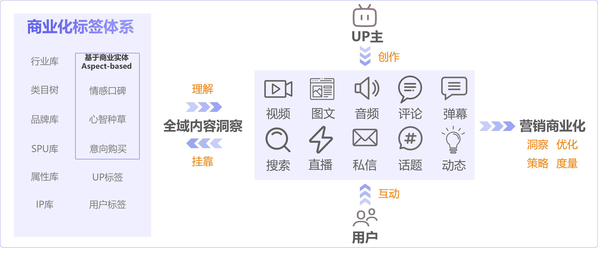
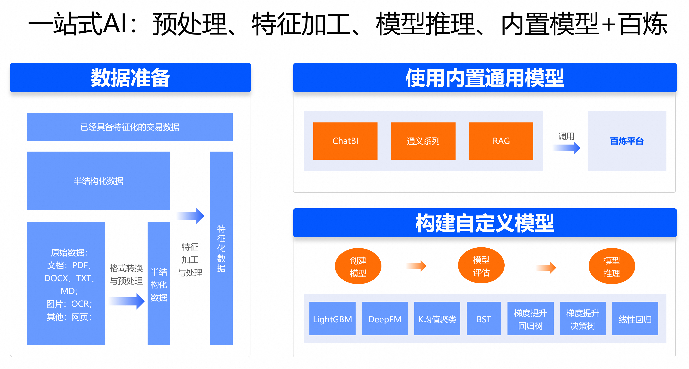
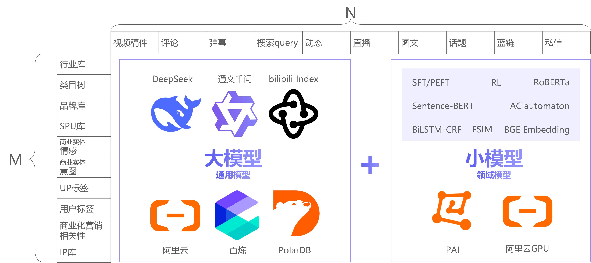
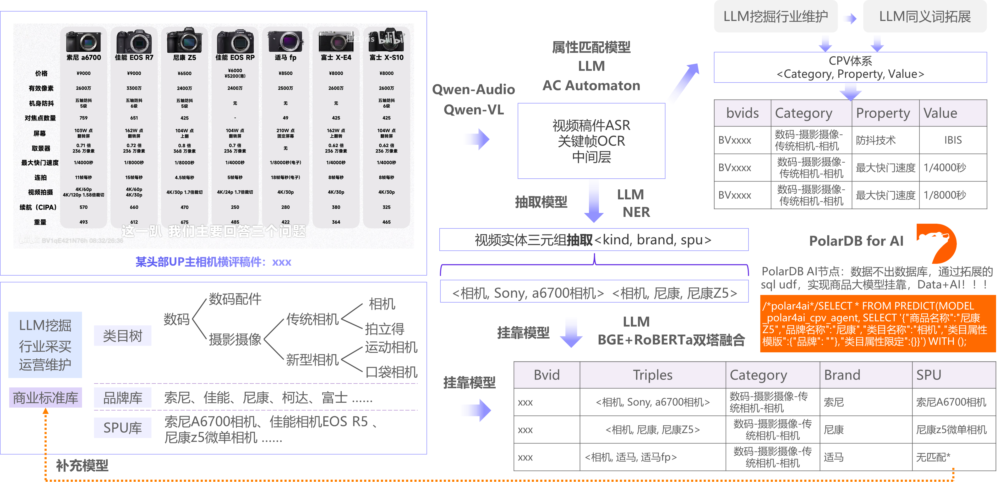
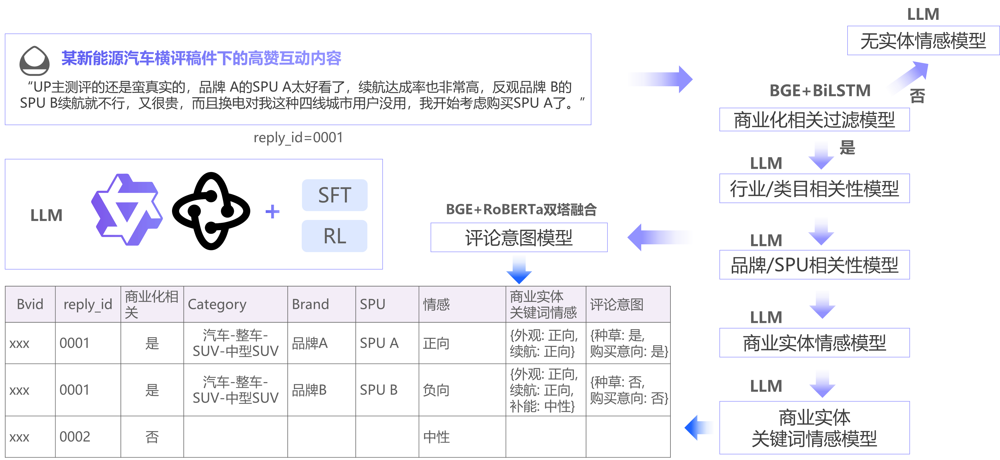

哔哩哔哩构建全域内容洞察的实践¶
一、客户背景¶
哔哩哔哩（B站）是国内领先的文化社区和视频平台。平台内容生态高度多元化，涵盖视频、图文、直播、音频、互动内容、搜索、动态等多种体裁。作为以“内容种草”为核心心智的平台，B站已成为品牌营销的重要阵地，尤其在汽车、3C数码、美妆、快消、教育培训、游戏等行业具备显著影响力。
二、业务场景与核心痛点¶
与传统电商平台不同，B站用户的消费决策往往源于内容互动所形成的品牌认知与兴趣积累，而非站内直接转化。这一特点对营销效果评估提出了更高要求。为此，平台基于经过去标识化、匿名化处理的海量公开互动数据，开展群体层面的数据趋势分析，以支持内容生态优化与商业服务能力的持续提升。例如，通过分析洞察辅助评估品牌内容的传播广度与用户反馈方向，为广告主提供更科学的效果参考。

B站内容平台营销商业化路径
B站商业化团队在服务品牌客户过程中，面临三大核心挑战：
-
营销效果难以量化：品牌在B站投放内容（如UP主种草视频）后，缺乏有效手段衡量用户群体是否被“种草”。例如，某汽车品牌发布新车测评视频后，需从去标识化的互动内容中识别用户群体对续航、外观、价格等属性的评价，以评估内容传播效果。
-
内容资产难以结构化：B站内容体裁丰富、语义复杂，视频中包含大量视觉、语音、文本信息，互动区则充斥高信息密度的长文本。传统关键词匹配或规则引擎难以准确提取商业实体（如品牌、类目、SPU）及其关联语义。
-
营销策略缺乏数据支撑：品牌希望基于B站真实讨论内容，反向指导新品定义、传播策略与创意方向。例如，某美妆品牌需了解用户群体在讨论粉底液时最关注“持妆度”“遮瑕力”还是“肤感”，但缺乏系统性内容洞察工具。
为解决上述问题，B站商业化数据科学团队联合阿里云，构建了一套面向全域内容的结构化洞察框架，实现从“内容感知”到“商业洞察”的数据闭环。
三、解决方案：“大模型+小模型”协同的全域内容洞察新框架¶
PolarDB for AI 是阿里云云原生数据库 PolarDB 内部的分布式机器学习组件，支持在数据不出库的前提下，高效调用轻量化小模型进行实时推理，同时可联动通义千问等大模型处理复杂语义任务，实现大模型与小模型协同一体化架构。

PolarDB for AI一站式方案
-
PolarDB for AI 可以通过调用通义千问大模型，对经过去标识化、匿名化处理的用户互动内容进行批量分析，辅助洞察群体层面的兴趣趋势与反馈倾向，为产品优化与内容策略提供数据支持。
-
PolarDB for AI 通过定制化的电商领域大模型，结合阿里电商领域的商品知识图谱，大大提升B站对类目、品牌、SPU等多个标签的识别能力，实现品牌高精准匹配，促进内容资产结构化。

B站全域内容洞察矩阵
B站采用“大模型+小模型”融合的技术路径，依托 DeepSeek、阿里云通义千问（Qwen）系列大模型、B站自研的Index模型与 PolarDB for AI 能力，构建覆盖M×N矩阵的全域内容洞察体系，M为商业化标签维度，N为内容体裁维度。
整体技术架构分为三层：
-
AI 基建层：基于阿里云百炼平台、PAI、GPU资源及B站自研Agent平台，提供模型训练、推理与调度能力。
-
数据与模型层：结合通用大模型（如 Qwen、Qwen-VL、Qwen-Audio）与 PolarDB for AI提供的领域小模型（经 SFT、强化学习微调），实现高效、低成本的内容洞察。
-
应用服务层：通过 PolarDB for AI 节点，提供模型算子能力，实现“数据不出库”的高效挂靠与推理，且提供稳定独享的模型实时在线服务能力。
该方案兼顾效果与成本：通用大模型用于标签体系挖掘与复杂语义分析，领域小模型则在特定任务（如实体抽取）上实现更高精度与更低延迟。
四、关键技术实现与难点突破¶
1、视频稿件内容提取：从非结构化到结构化¶

视频内容提取过程
视频是B站核心内容载体，但其信息分散于画面、语音与字幕中。B 站采用多模态融合策略：
-
中间层构建：通过 ASR（语音转文本）与关键帧 OCR（图像文字识别）提取原始文本，再利用 Qwen-VL、Qwen-Audio 等多模态大模型生成语义中间表示。
-
CPV体系构建：基于大模型挖掘与行业维护，建立“类目-属性-属性值”体系。例如，识别出视频中“相机”类目下的“防抖技术”属性及其值“IBIS”。
-
实体三元组抽取与挂靠：通过大模型抽取<类目, 品牌, SPU>三元组，但原始抽取结果存在与标准产品库里的命名不一致的问题（如“尼康Z5” vs “尼康Z5微单相机”）。
技术难点：如何将非标准化抽取结果精准挂靠至标准产品库？
解决方案：B站与阿里云PolarDB团队合作，在PolarDB for AI节点中部署定制化挂靠模型。通过SQL，在数据库内直接调用精调后的大模型进行实体对齐。例如，我们来预测一个稿件的类目。执行如下SQL：
/*polar4ai*/
SELECT * FROM PREDICT(
MODEL _polar4ai_cpv_agent,
SELECT '{"商品名称":"尼康Z5","品牌名称":"尼康","类目属性模板":{"类目":""},"类目属性限定":{"类目":["数码-摄影摄像-传统相机-相机","数码-数码配件",...]}}'
) WITH ();
得到{"类目"："数码-摄影摄像-传统相机-相机"}
该方案实现“数据不出库”的高并发挂靠，解决抽取结果与标准产品命名的一致性问题，既保障数据安全，又显著降低工程复杂度。同时，结合 BGE+RoBERTa 等 NLP 模型进行匹配，进一步提升挂靠准确率。
2、互动内容分析：从海量数据中挖掘高价值线索¶

互动内容分析过程
B站评论区信息密度很高，但90%以上为非商业化内容。直接使用大模型全量处理成本高昂。
技术难点：如何在成本可控的前提下，利用匿名化互动数据实现多实体群体反馈的细粒度分析，支撑内容与商业服务的持续优化？
解决方案：采用“过滤-分析-挖掘”三级流水线：
-
第一级：商业化过滤：使用轻量级 NLP 模型，如 BGE+BiLSTM 模型快速筛除无关内容，仅保留可能涉及品牌、产品讨论的内容。
-
第二级：实体与予以关联分析：对过滤后文本，利用 PolarDB for AI 提供的商品大模型识别类目、品牌、SPU，并建立不同实体间的语义关联关系。
-
第三级：意图与属性挖掘：进一步识别“种草”“购买意愿”等高阶语义，并提取用户群体关注的具体属性（如“续航达成率高”“价格贵”），形成结构化洞察。
五、总结¶
通过与阿里云通义千问大模型及 PolarDB for AI 的深度协同，B 站成功构建了一套高效、可扩展的全域内容洞察体系。该体系不仅解决了品牌营销效果度量难、内容资产结构化难等核心痛点，更将 B 站独特的社区公开互动数据转化为可行动的商业洞察，显著提升了广告主的投放确定性与 ROI。目前，该全域内容洞察体系已应用于 B 站的哔哩指数、花火平台 AI 选 UP 主、哔哩必达洞察报告、引力计划爆文投放、经营号线索挖掘及品牌广告搜索词包等商业化场景，实现从内容洞察到营销转化的全链路提效。未来，B 站将持续优化模型能力，拓展至更多内容体裁与商业场景，进一步释放内容平台的营销价值。